Lab on Attacking the Lab – Solutions
Table of Contents
1. Warm Up: Listening to Some Interesting Audio
- Question 1
- A SDR is a radio transceiver where (de)modulation, filters and other components traditionally implemented in analog hardware are instead implemented in software running on digital hardware. Thus, it is more flexible because a lot of parameters can be changed at runtime.
- Question 2
- The frequency range of the RTL-SDR range from 500 kHz up to 1.75 GHz.
1.1. Listen to Local FM Radio Stations
- Question 3
- It is an algorithm (implemented in hardware on a circuit or software) used to control the gain of the receiver automatically in order to have a constant output level, avoiding saturation, clipping, or too low output.
- Question 4
- The frequency has to be set to the carrier of an FM station (with an offset to avoid DC component). The filter has to match the bandwidth of the FM signal, generally between 100 or 200 kHz.
- Question 5
- Yes, we can, in a bad quality. The reason is that the signal amplitude (which is constant in FM) follows the frequency that is currently used by the modulation (which is not constant in FM). The frequency shifting left and right on a spectrum, this cause a slightly amplitude change (AM) as function of this frequency shift (FM). Thus, the AM receiver is able to reconstruct a low-quality signal based on this amplitude change.
1.2. Listen to Our Transmitter
- Listen to the
message.complexfile with GQRX, to do so, use the IQ file option and set the device string accordingly:file=/full/path/message.complex,freq=433.92e6,rate=192e3,repeat=true,throttle=true. Then set modulation toWFM (mono)and the filter width to the entire bandwidth of the signal. - You must understand
Hello, you are on radio non-sense, 31, 12, 31, 9, 12. - These numbers corresponds to a secret message in ASCII encrypted with a one-time pad encryption scheme.
- The
number_station_rx.pyscript can be used to decrypt the message, which is:hello.
- Question 6
- This is a number station, a radio station which broadcast numbers. Those numbers corresponds to a message, and are often obfuscated or encrypted.
- Question 7
- The radio carrier is Frequency Modulated (FM).
- Question 8
- The original secret message is
hello, once decrypted with the one-time pad. - Question 9
- We can use the squelch function, used to mute a channel when there is no activity on it.
2. Exercise: Reversing the Remote of the Lab's Curtains
2.1. Reconnaissance
- The resonator is the Epcos R904. Its datasheet can be found on ChipFind.net.
- Question 10
- The resonator is used to generate the carrier wave that will be modulated by the control signal.
- Question 11
- The frequency of the carrier is at 433.42 MHz.
- Question 12
- Considering the very simple architecture of the remote control, it is highly probable that we will have an OOK modulation scheme, where the modulation is achieved by simply turning on and off the carrier which only needs a transistor acting like a switch.
2.2. Using the Universal Radio Hacker (URH) to Reverse the Protocol
2.2.1. Demodulation (ASK)
Open the
RTL-SDR-433_420MHz-1MSps.complexfile in URH. You will end-up with this, in theInterpretationtab: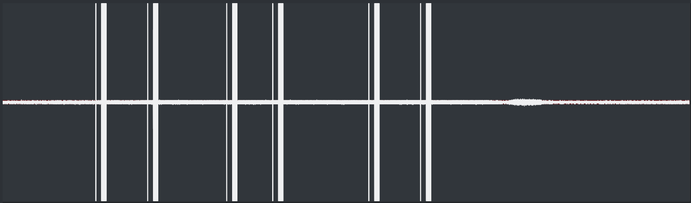
Figure 1: After opening the complex file, we see 6 packets.
We see 6 packets, each one composed of a brief pulse at the beginning, then a longer one. In our recording, each group of 2 packets corresponds to a different button, where each packet correspond to one button press.
Zoom into the signal, no matter where. We see that there is no frequency change nor amplitude change in our signal, only pulsation (carrier is on or off). This is a particular type of ASK (Amplitude Shift Keying), called OOK (On-Off Keying):
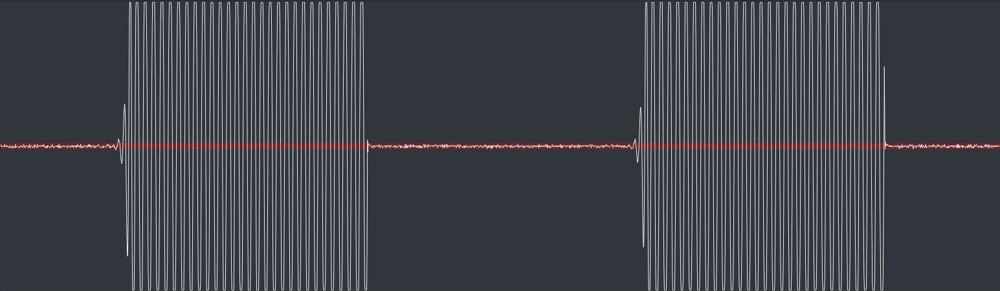
Figure 2: Zooming into the signal to search the modulation type.
- Question 13
- The modulation used is On-Off Keying (OOK).
We want to search the smallest transmitted symbol in our signal, in order to find the symbol length. This is the information unit in our transmission. Once we have find one smallest symbol (there are many), we can measure it's length with URH:
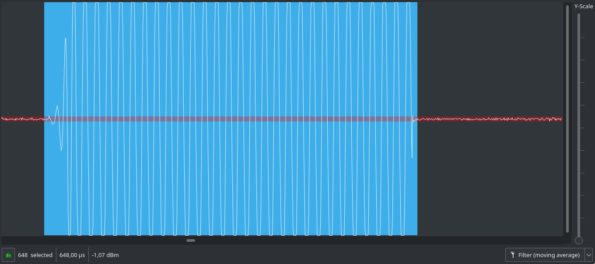
Figure 3: Measuring the length of the smallest symbol.
Here, the symbol length is approximately of 648 samples. Since we have a signal sampled at 1 MSps (1 million of samples per second), 648 samples is equal to 648 µs (as displayed by URH). If the signal would have been sampled to 2 MSps, then the number of samples would have been equal to approximately 1296, which still corresponds to 648 µs \((\frac{1e6}{2e6 / 1296} = 648)\).
- Question 14
- The symbol length in µs is equal to 648 µs.
Set the parameters into URH. Your must see this:
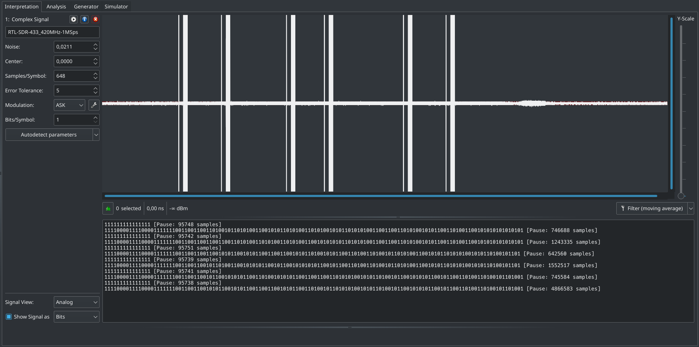
Figure 4: Result of our demodulated signal.
2.2.2. Decoding (Manchester-I)
No that we have a demodulated message, we will start the analysis of the protocol in the
Analysistab. At the beginning of each packet, we observe that we the short pulses before the long ones are sequences of 17 bit set to 1 (11111111111111111), taking approximately 10000 ms. They are used to wake-up the receiver by sending a preamble message. Since they contain no data, we can hide these rows to analyze the protocol.We end up with this:
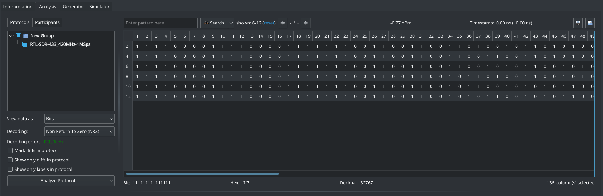
Figure 5: Analysis tab after hiding preamble messages used to wake-up the receiver.
We want to find the encoding scheme of the original message. To that, we have to know the different line encoding that exists and to look at the message we get, comparing it to what we know.
We enable
Mark diffs in protocol, and starting from the left of the message, we have some sequences of 4 bits set to 1 and 4 bits set to 0 (1111000011110000). Past bit 24 (included), we observe that we never see again a sequence of 1 or 0 longer than 2 bits (11or00). Moreover, if we group bits by 2 from bit 25 (included), we only obtain groups of01and10. This strongly suggest a Manchester encoding. Finally, looking at bits 35 to 40, we observe a counter that is incremented, displayed after its encoding by a Manchester code, which confirm our guess. In fact, a group of bits equal to01(low-to-high transition) in Manchester code is equal to a logical1, and a10(high-to-low transition) equal to a0. This is the Manchester encoding described in the IEEE 802.3 norm (and not the Manchester encoding described previously G. E. Thomas), as there is two conventions. Thus, for the counter,1001encoded is equal to01decoded, and0110is equal to10(incremented!), and so on. Since we assume that the message is Manchester encoded, then, the sequences of1111and0000at the beginning are invalid. They are used to indicate to the receiver the beginning of a packet and synchronize its clock.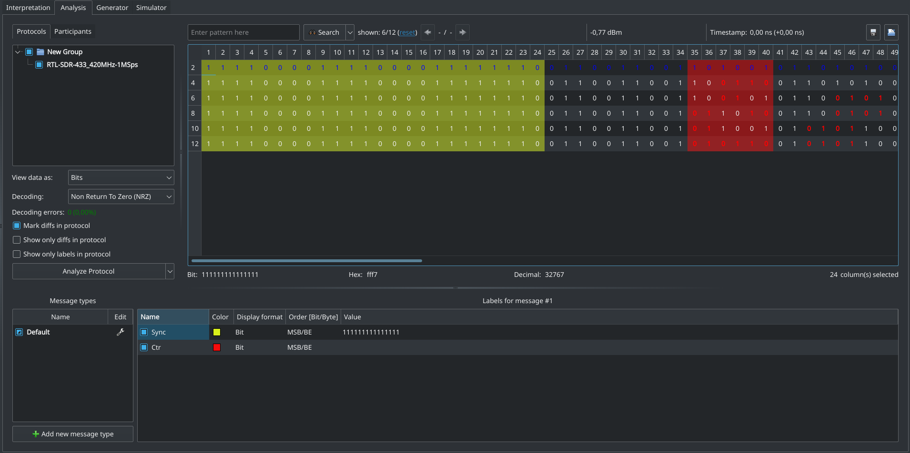
Figure 6: We suggest a Manchester encoding and we start to identify the Synchronization and Counter field.
- Question 15
- The remote control use the IEEE 802.3 Manchester encoding,
where a received
01is equal to a logical1and a received10is equal to a logical0.
To analyze the data, we will have to ignore the Synchronization field since it does not contain any real data. To know exactly where the data start, we look at our counter, bit 35 to 40. It is highly improbable that our counter is only on 3 bits (before Manchester decoding). Lets assume that it is on 4 bit (we can confirm that by analyzing more traces), then it start at bit 33 (included) and end at bit 40 (included). Then, to complete one byte, we have a 4-bit value from bit 25 to bit 32 (
01100110in Manchester encoding,1010after decoding, corresponding to0xA).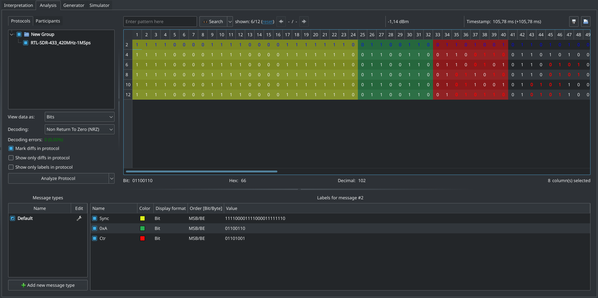
Figure 7: We identified a Fixed field and the entire Counter field.
We will end-up with this message by setting
DecodingtoManchester-I. When changing decoding, you will have to set the label manually again, URH doesn't do that automatically. We are now ready to analyze the actual data of the packet.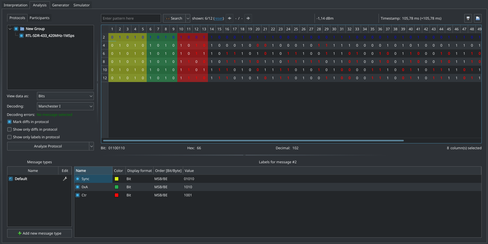
Figure 8: We change the encoding for
Manchester-I. We can now directly see the Counter increment.
2.2.3. Decryption (XOR)
Now that we have a decoded message, we have the actual transmitted data. However, an encryption layer can still exist on the data, either on the entire packet or only on a part of it. In order to reverse the protocol, we will speculate on mandatory or possible fields inside the message:
- Synchronization (
Sync) - Only relevant for the physical radio layer and not for the upper layers.
- Fixed (
0xA) - We already identified a fixed 4-bit field at the
beginning of every message (
0xAafter decoding). - Counter (
Ctr) - We already identified a counter at the lowermost 4-bit the first byte of the transmitted data. It could be used in an encryption process (like a key), or as it to avoid replay attack.
- Control Code (
Ctrl) - Different buttons lives on the remote controller, then, a unique fixed code must be sent to the target to identify each button separately.
- Address (
Addr) - When we use our own remote controller with our own target, we don't want to control the neighbor's target – at least, the manufacturer don't want this. Then, a unique address of our own target has to be embedded in the message.
- Checksum (
Chk) - This one is not mandatory, but very common, because it's cheap, very easy and useful to check for bad message and correct some minor issues.
- Rolling Code (
RC) - In a blink of an eye, we see that there is a lot of data which change between each button press, even for the same button. This suggest an encrypted rolling code, as we don't see any clear pattern yet.
Other fields could be present in the message. If we at least identify the mandatory and the very probable fields cited above, the unknown last fields could be deduced later.
- Synchronization (
- Question 16
- We expect to see at least Counter, a Control Code, an Address fields, and maybe a Rolling Code, a Checksum, a Synchronization fields.
Continuing from the Counter (
Ctr) to the right, we observe a 4-bit field (bit 14 to 17) which change only when we we change the pressed button. This strongly suggest that this field is the Control Code (Ctrl). Since this only take half of the current byte, the next 4 bits represent certainly another field, but we have any clue here. Continuing analysis from left to right, we then only have bits that flips between message without any particular meaning. That suggest that at least the rest of the message is encrypted. Currently, we got this: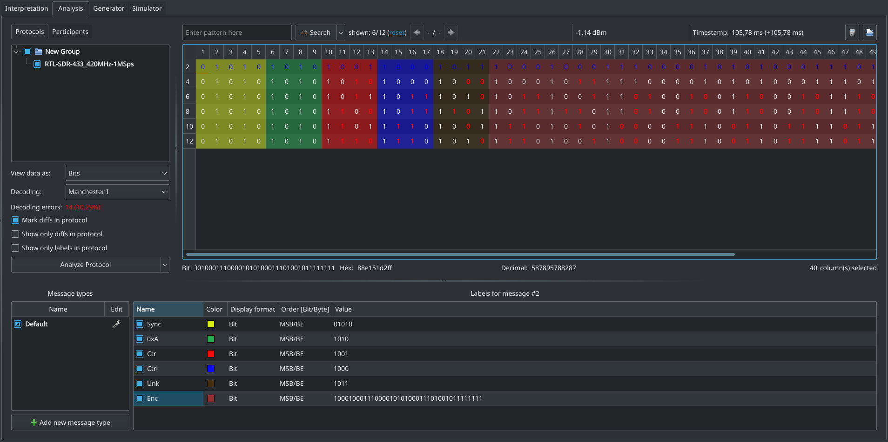
Figure 9: We identified the Control Code field and delimited other fields for investigation.
- At this point, in real life, you would have to do some experiments with the packets to understand how the encryption/obfuscation of the message works. Here, we don't have enough time in the lab – so we give two links [1] [2] where the reverse engineering and the format of the protocol is given. From that, you should be able to understand all the fields and to write your own decoder in the next step.
- URH is powerful enough to decode common used codes, but if there is more
operation on the transmitter side, like cryptography or obfuscation, URH
will need some help. Here, common decoders of URH will not be
sufficient. We can resolve this by using a custom decoding script, which
is a Python script – written by ourselves – that will decode a packet
and bring its output to URH by the standard output stream. Go to
Edit,Decoding, chooseExternal Programand click onAdd to Your Decoding. TheYour Decodingwindow is a stack of decoding function that can be combined to create really advanced decoder. In our case, we will only use our own script. In theDecoderfield, enter the full path of the Python script, e.g.,/home/wisec/urh_decoder.py. Now, URH will send the demodulated data to your script – in the first argument, i.e.sys.argv[1]To quickly test the script, you can either try it directly from the shell, or using the URH'sTestfield in theDecodingwindow where you can enter a signal example and see the output in theDecoded Bits. When you have finished to test the decoder, you can use it in URH by clicking on
Save as...and giving a name to it (e.g.SomfyRTS). Close theDecodingwindow, and select your just created decoderSomfyRTSin theDecodingfield. Beware that the script will squash the first 24-bit of the synchronization field, so you will have to re-set the URH annotations manually. After that, we end-up with this: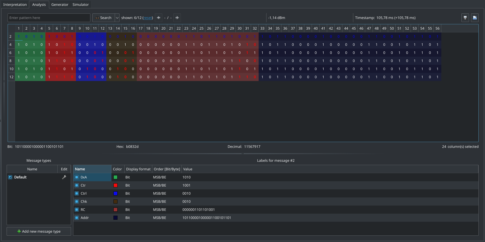
Figure 10: Completely decoded packets with a custom Python script. Beware that we don't have the
Syncfield anymore!
- Question 17
- The first message without the first synchronization field
is:
1010 1001 0010 0010 0000001101101001 101100001000001100101101
- We can see that the
0xAis the fixed part of the key, then theCtrwhich is the dynamic part of the key used for the XOR operation. Then we observe theCtrlthat indicate the pressed button, which is equal for two-by-two signals. Then we have theChkthat also change only two-by-two (because in the Counter field we have two bit flips which cancel each other in the Checksum). Finally, we have ourRCfield which once decrypted, is just equal to the counter in his lowermost bits. Finally, we have theAddrfield which is constant because we used the same remote during all the test.
- Question 18
- The XOR provides "Security by obscurity", which is not considered as secure by the Kerckhoffs principle.
- Question 19
- The purpose of the counter and the rolling code is to prevent replay attack. Indeed, if the receiver's counter is not synchronized with the transmitted counter, then it will refuse to execute the command. Then, the attacker has to guess the counter value or to read it by intercepting previous legitimate transmissions.
- To compute the checksum used by this protocol, one can use the
cks.pyscript like this:./cks.py 10101010001000000000001101101010101100001000001100101101. This is a Python implementation of the checksum used in this protocol. Simply speaking, the checksum used is a XOR of all the bytes of the packets. This corresponds to a CRC polynome, that we can find in two way:- Hardware implementation: By looking at Figure 1, Page 3 of this
MicroChip publication, we can see that the higher order of the
polynome define the size of the CRC, while the lower order define the
XOR between the current CRC computation (initialized to 0) and the
arriving data. Those two are mandatory. The others intermediate order
define XOR inside the CRC being computed. By this graphical
demonstration, we easily conclude that XORing all the bytes between
themselves on a 4-bit value is equivalent to compute a CRC with the
following polynome: \(x^4 + 1\), which is represented by
10001bor0x1. Why not0x17? Because 4-bit CRCs are the most smallest ones, so the \(x^4\) term is implicit, then there is only the \(x^0 = 1\) defined by0x1. - Theoretical verification: On RNDTool.info, by setting
CRC polynomial as binary sequenceto10001, andMessage as binary sequenceto10101010001000000000001101101010101100001000001100101101, and looking atRemainder is:in the polynomial division, we see that the remainder is \(x = x^1\). If you look at the LSBs –101101– of the message, that corresponds to the10just before the last1. And indeed, for this message in our protocol, the checksum was0010.
- Hardware implementation: By looking at Figure 1, Page 3 of this
MicroChip publication, we can see that the higher order of the
polynome define the size of the CRC, while the lower order define the
XOR between the current CRC computation (initialized to 0) and the
arriving data. Those two are mandatory. The others intermediate order
define XOR inside the CRC being computed. By this graphical
demonstration, we easily conclude that XORing all the bytes between
themselves on a 4-bit value is equivalent to compute a CRC with the
following polynome: \(x^4 + 1\), which is represented by
Now that we know the polynome used by this protocol, we can configure our CRC computation into URH, so that it will be computed automatically. To do so, one must have a label called
checksum, then right-click on the label in the bottom window, finally click onEdit.... Set theChecksum categorytogeneric, theCRC functiontoCustom, theCRC polynomial (hex)to1,Start value (hex)to0andFinal XOR (hex)to0. Finally, setConfigure data ranges for CRCto1to12and17to56. This tell URH to compute the CRC without using the checksum field itself, otherwise URH will compute a remainder of0for valid packets.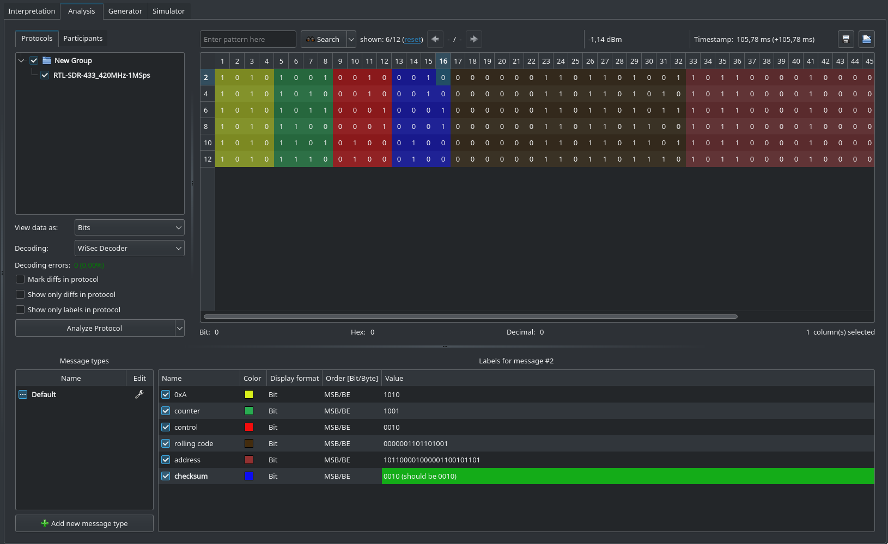
Figure 11: Messages with a valid CRC computation
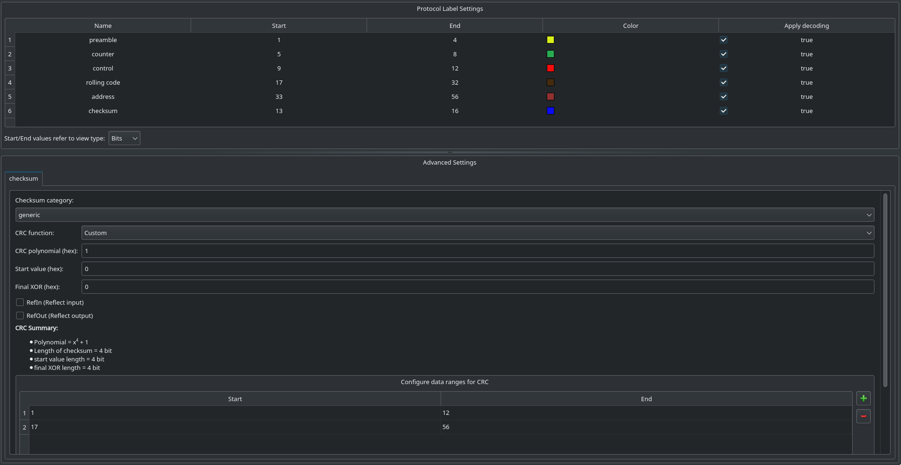
Figure 12: Configuration of the CRC computation
- Question 20
- A checksum is a code used to identify transmission errors. The correction is done by re transmitting the message if an error occurred. Different checksum algorithm exists, one of the most simple being the Single Parity Bit. The checksum used here is a CRC, with the \(x^4 + 1\) polynome.
- Question 21
- Since there is a protection against replay attack, we can't generate an open packet at any time because we need the counter information. Thus, we can indeed generate an open command with the last valid command, because we can get the counter since we reversed the protocol.
- Question 22
- If we spoof one legitimate command by sending a crafted command, the next legitimate command will be ignored by the curtain since it will not be synchronized anymore.
3. Bonus: Spoof the Remote by Transmitting an "Open" Command
- Question 23
- Steps in URH to spoof a command:
- Record a signal of one button press.
- Demodulate and decode it.
- Add the
urh_encoder.pyscript into the Encoder path of the Somfy Decoding profile. - Go into the Generator tab.
- Increment the Counter and the Rolling Code.
- Modify the Control Code.
- Click on
Edit...to set the carrier frequency to433.42M. - Click on
Send data.... Set the parameters and send the signal. - The curtains should be hacked.
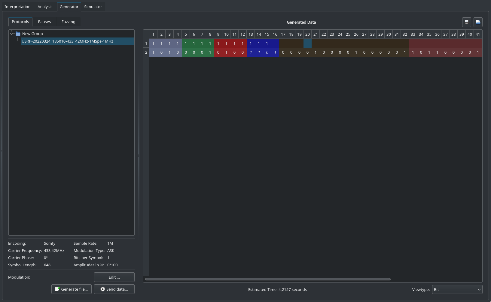
Figure 13: Spoofed packet
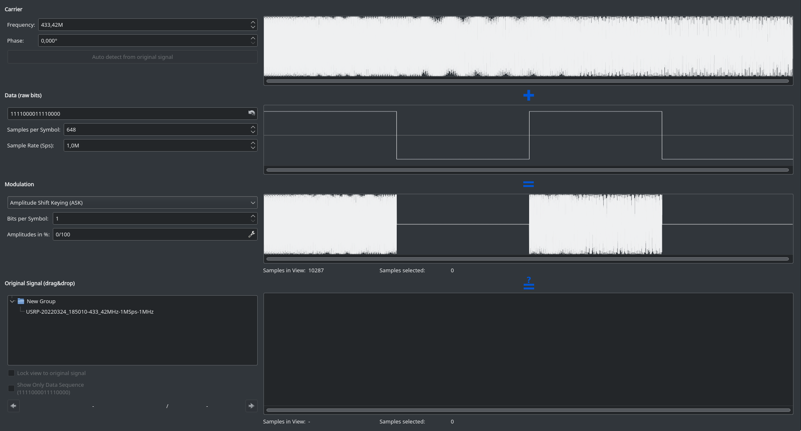
Figure 14: Modulation parameters
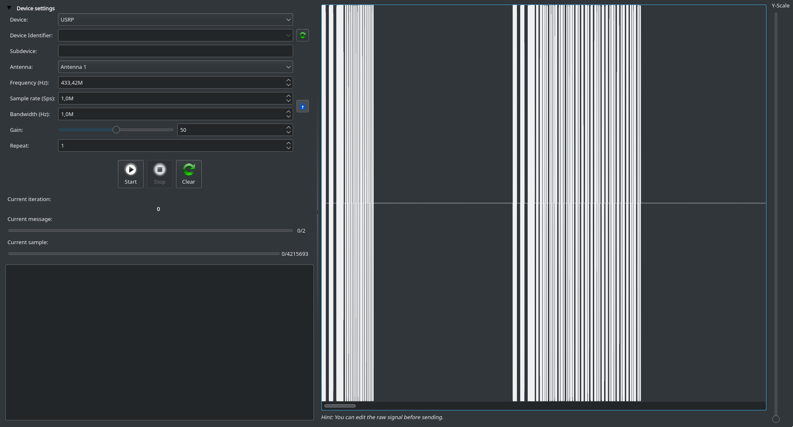
Figure 15: Sending signal window
4. Bonus: Reversing the Hardware of the Remote
Download and launch Salae Logic Analyzer v1:
wget https://downloads.saleae.com/logic/1.2.40/Logic-1.2.40-Linux.AppImage chmod +x ./Logic-1.2.40-Linux.AppImage ./Logic-1.2.40-Linux.AppImage
- Load the
curtains_logic_analyzer.logicdatafile by clicking onOptionsin the left upper corner, thenOpen capture / setup. First, we clearly see that the buttons control one transistor that itself control the radio control signal (meaning the digital signal that control the radio carrier emission). But each button has additional circuitry to modify this signal individually.
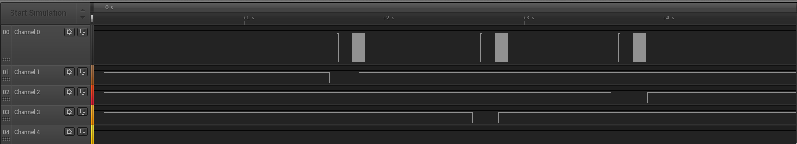
Figure 16: Pressing a button put on the radio
- In the square wave of the radio control signal, a high voltage means to turn the radio carrier on, and a low voltage means to turn the carrier off. That is how symbols are generated.
Secondly, if we compare two radio control signals between two buttons, we observe that the beginning is similar (sync packet and fixed key), bet then we have changes in the signal:
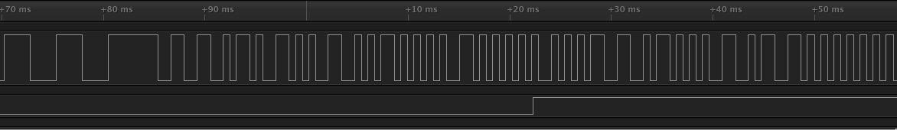
Figure 17: Button press 1
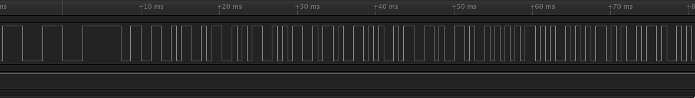
Figure 18: Button press 2
- Comparing the two pictures, we can identify the counter increment: the
first peak that is changing is one peak that goes from left (1st press) to
right (2nd press). Remembering that those peaks encode logical bits in
Manchester encoding, that means that we have
1010=00in the first message, and1001=01in the second message. We can see two next peaks that move from left to right, encoding the control code.
- Question 24
- This hardware implement the protocol by sending a digital signal to a transistor that control the resonator. This signal controls if the resonator is able to emit the carrier through the antenna, or not. This signal depends on the pressed button. It encodes logical bits with a Manchester encoding.